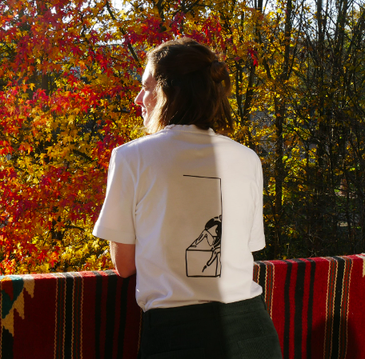

01
Colormat, ma marque de vêtements illustrés
Une marque que j'ai créée à Marseille : t-shirts illustrés à la main et imprimés localement, vestes sérigraphiées en tissus recyclés, en pièces uniques ou petites séries. J'ai tout fait de A à Z, des dessins jusqu'au site, que j'ai conçu et codé moi-même en HTML et CSS (accueil, shop, collab, galerie).
colormat.fr